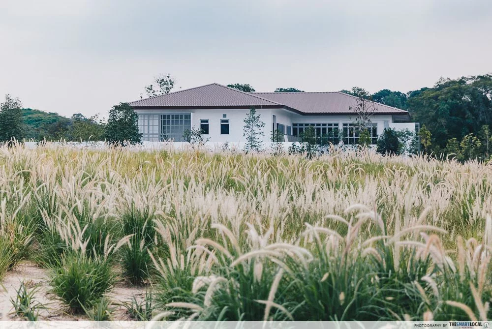
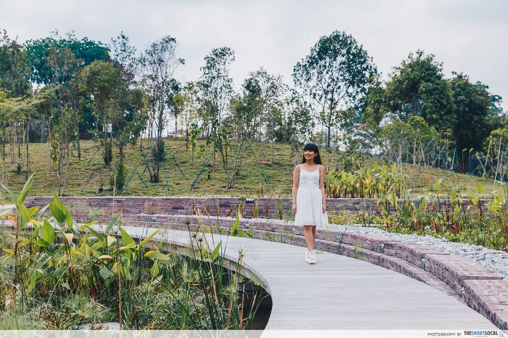

Lakeside MRT
Recently opened on 27th April 2019, the lakeside garden is one of the Jurong Lake gardens that will soon join the Gardens By The Bay and Botanic Gardens as the third national garden in Singapore.
Lakeside Garden is located near the Lakeside MRT with just a five minute walk from the station!
Lakeside MRT
Lakeside Garden is the northern strip of the Jurong Lake Gardens

Northern strip

Multi-purpose hall: Garden House

Lone Tree

A bridge between habitats

Forest Ramble Playground

Maze

Clusia cove

Boardwalk
Cafe

Jurong Lake

Rasau Walk
Address: Yuan Ching Road, Singapore
Opening hours: 24/7
Admission: FREE
Nearest MRT: Lakeside (5-minute walk)